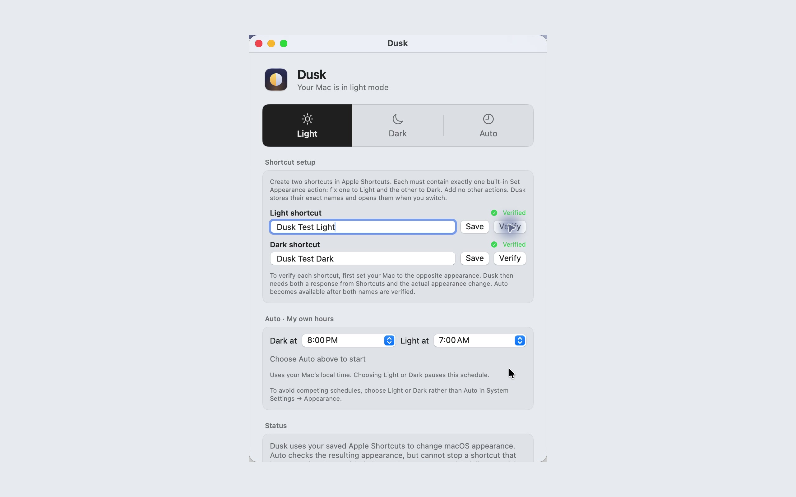

Dusk for Mac · Mac App Store edition
Your Mac.
Your light.
Choose Light or Dark from your menu bar. Let Auto switch at the daily hours you choose.
Coming to the Mac App Store. Not released yet.
Free · macOS 14 or later · Apple Shortcuts required.


Three choices. Your daily rhythm.
Keep appearance controls close, without opening System Settings each time.
Light
Choose a bright appearance when you want it. A manual change pauses Auto.
Dark
Switch your Mac to Dark. Apps that support system appearance can follow along.
Auto
Pick when Dark starts and Light returns, using your Mac’s local time. Keep Dusk open for scheduled changes.
A small setup in Apple Shortcuts
This edition uses two shortcuts you create. Setup is required before automatic switching.
- In Apple Shortcuts, create one shortcut with a single Set Appearance → Light action and another with Set Appearance → Dark. Give them different names and add no other actions.
- Open Dusk’s shortcut setup, enter their exact names and save them.
- Verify each shortcut from the opposite appearance. Once both are verified, choose your hours and turn on Auto.
Know what follows
- Choose System or Follow system in apps with their own appearance setting. Fixed themes and some apps may not follow a change.
- The Mac App Store edition changes macOS appearance. It does not recolor pictures, PDFs or website content, install an extension, or change another app’s settings.
- Auto runs while Dusk is open and your Mac is awake. If Dusk cannot confirm a switch, it pauses Auto and shows recovery instructions.
- Use Light or Dark in System Settings when running Dusk’s schedule, so macOS Auto does not compete with it.
Your settings stay on your Mac
No Dusk account, ads, analytics or in-app purchases. The app makes no network requests. Apple delivers downloads and updates; your own shortcuts are separate workflows under your control.
Looking for dark websites?
Dusk for Chrome is a separate extension. It can follow your browser’s appearance and offers its own website controls. It is not included in the Mac App Store download.